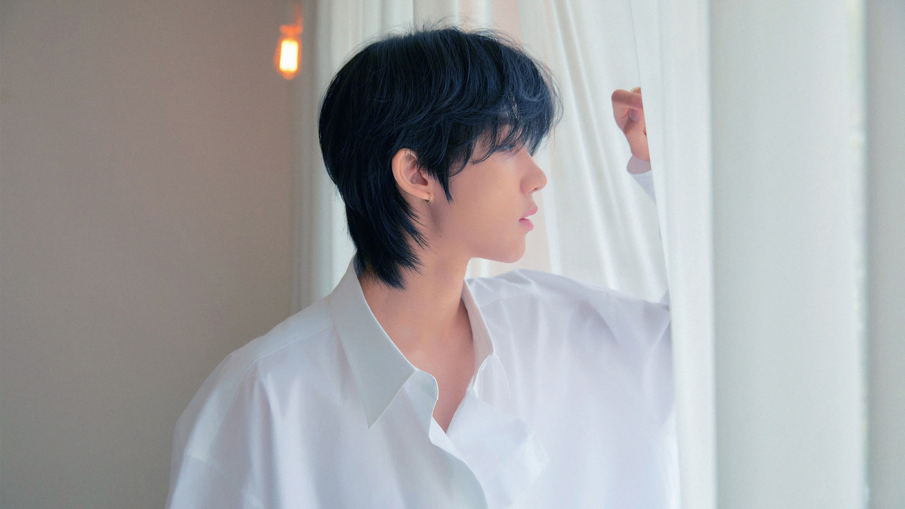
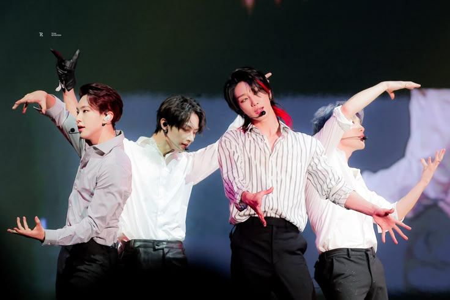
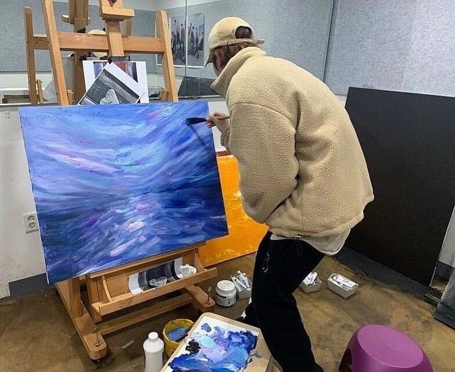

COMEBACK
COMEBACK
My Top 5 SEVENTEEN Songs
Circle, Pinwheel, God of Music, Campfire, and Kidult — the songs that live in my heart.
💎 Say the name
Comebacks, theories & CARAT diaries
A love letter to the 13 members who taught me that teamwork makes the dream work. Here you'll find comeback reviews, era rankings, lyric breakdowns, and my softest CARAT moments.

✦ My Forever Bias ✦
徐明浩 · 1997 · Performance Unit · China
Minghao is the kind of person who makes you want to slow down and notice the small things. He dances like water, paints like a poet, and speaks with a quiet wisdom beyond his years. He's taught me that stillness is its own kind of strength — and that being soft doesn't mean being weak.
"I'm not shy. I just think a lot before I speak."
COMEBACK
Circle, Pinwheel, God of Music, Campfire, and Kidult — the songs that live in my heart.
Quiet strength, artistic soul, and the softest eyes in K-pop — a tribute to The8.

UNITMinghao, Hoshi, Dino, Jun — the unit that always delivers.

MINGHAOHis paintings, his photography, and the quiet beauty he creates.
"Our youth is here — and we'll shine together." — SEVENTEEN, "Our Dawn Is Hotter Than Day"
Every CARAT has their own list. And every CARAT will defend it with their whole heart. Mine is full of soft, emotional songs — the ones that feel like a warm hug, a late-night thought, or a quiet cry in the car. These five aren't just my favorites. They're the ones that shaped me.
This song is a spiritual experience. The lyrics, the vocals, the build — everything about "Circle" feels like a gentle reminder that we're all connected, that things come back around, that we're never truly alone. It makes me cry in the best way. It's my comfort song.
There's something hauntingly beautiful about "Pinwheel." It's quiet, aching, and full of longing — the kind of song that sits with you long after it ends. The way it captures distance and waiting and love… it's a masterpiece. Nobody talks about it enough.
My serotonin song. When I need to feel alive again, this is what I play. It's joy in musical form — bright, hopeful, and so full of love for what they do. It's the song that reminds me why I fell in love with SEVENTEEN in the first place.
"Campfire" feels like sitting outside with the people you love, warm drinks in hand, watching the stars. It's simple and gentle, and it captures that feeling of peace you only get when you're completely safe with someone. It's a hug in song form.
This one hurts in the most beautiful way. "Kidult" is about growing up without losing the child inside you — about being tired but still hopeful. Every time I hear it, I feel seen. It's the song I wish I could thank them for in person.
"Even when I'm tired, I won't give up — because the kid inside me still believes."
So that's my list. Circle, Pinwheel, God of Music, Campfire, and Kidult. If you know, you know. 💎